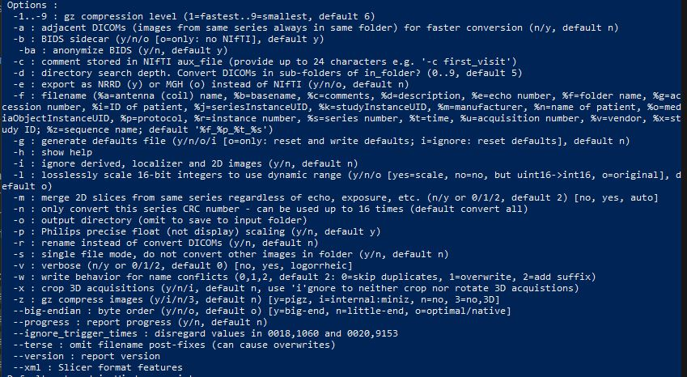

dcm2niix customisation
installation of other versions
The “convert_to_BIDS()” function automatically uses the tested “v1.0.20211006” of dcm2niix. Other versions can be installed by changing the version number and running the script before running “convert_to_BIDS()” the first time.
Otherwise, go to your output folder, delete the dcm2niix files in it, and run the “install_dcm2niix()” version with your version number.
https://github.com/rordenlab/dcm2niix/releases
install_dcm2niix("v1.0.20181125") # if you want to install the specific version v1.0.20181125
using other arguments
You can edit the dcm2niix_argument_string in the “user_settings.R” file according to your needs.
Just read here or inspect the possible arguments from this image:

dcm2niix_argument_string <- -ba y -f %d -z y -w 0 -i y
Argument |
Setting |
Behaviour |
|---|---|---|
-ba |
y (yes) |
bids anonymisation of JSON sidecar |
-f |
%d |
string for the filename (do not change this one) |
-z |
y (yes) |
compress the output (nii.gz instead of nii) |
-w |
0 |
in case of duplicate filename -> skip |
-i |
y (yes) |
ignore derived, localizer and 2d images |
Used arguments for conversion
Please edit these, if the conversion went wrong.